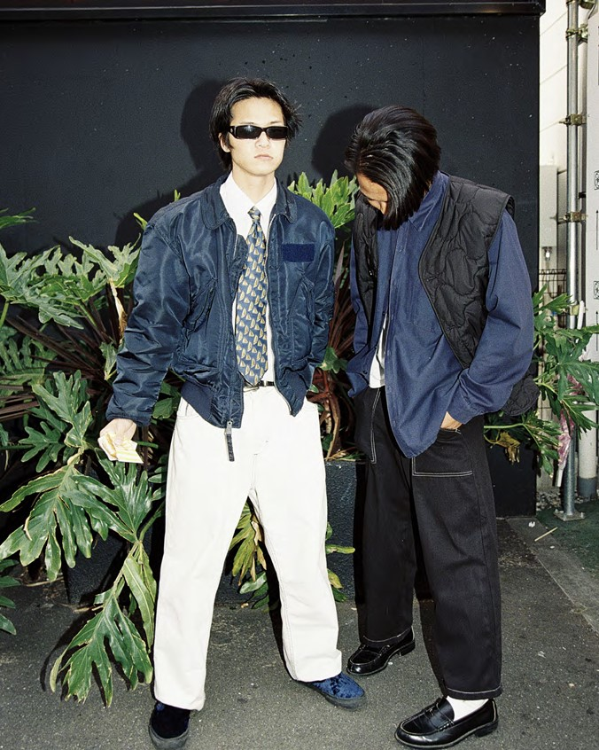

作品紹介 (Works)
これまでに制作した作品の一部を紹介します。
fashionsnap
制作年：2024年

私にとってのファッションスナップとは、単なる「着こなしの記録」
ではありません。
それは、「生きたストリートカルチャー、音楽、そ
してその人の哲学が交差する瞬間」を捉える、「対話」の結晶です。
LIVE SHOOT
制作年：2025年

私はライブ撮影でその場の「生」を伝える事を意識している。
音を肌で感じて私の感情をシャッターに載せて奏でる。
被写体の表情や仕草、構図や照明、音やオーディエンスの魂、
全てが私の感情と重なる瞬間が稀にやってくる。
その瞬間と遭遇した時、体に電撃が走った様な衝撃が流れる。
思考を上回る衝撃を写真に収めたい。その為にライブ撮影中は常にファインダーを覗き込んでいる。